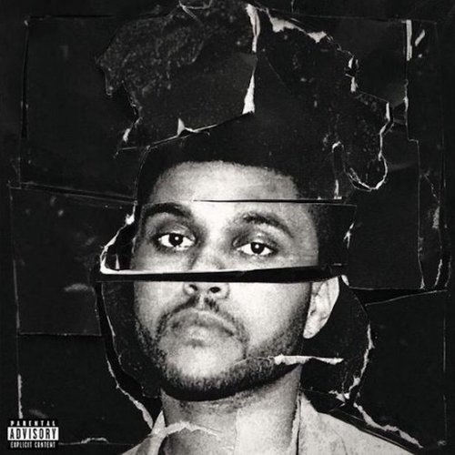
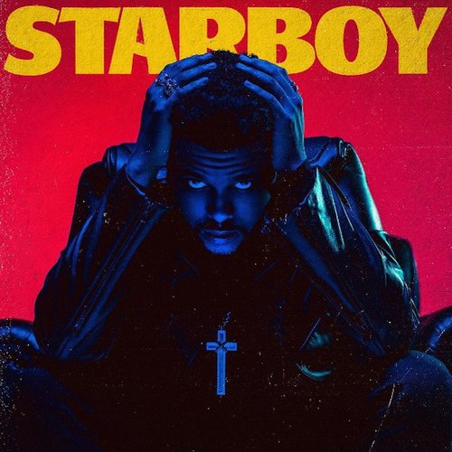

The Weeknd
Informations
Nom: Abel Makkonen Tesfaye
Date et lieu de naissance: 16 février 1990, Toronto (Canada)
Activité: Auteur-Compositeur-Interprète
Genre musical: R&B, Soul, Pop, Electro
Site officiel: The Weeknd Official Website
Abel Tesfaye grandit à Scarborough, dans l'Est de Toronto. D'origine éthiopienne, il apprend l'amharique auprès de sa grand-mère, qui s'occupe de lui tous les jours pendant que sa mère, qui l'élève seule, est au travail. Dans sa jeunesse, Abel Tesfaye est exposé aux influences musicales d'artistes RnB et pop comme Michael Jackson, R.Kelly et Prince. Il abandonne l'école à 17 ans, s'établissant avec deux amis dans le quartier torontois de Parkdale. Il obtient ensuite son premier emploi dans un magasin American Apparel : c’est à ce moment qu'il commence à enregistrer ses chansons.
Statut
Compositeur-Interprète depuis 2010
Discographie:

Beauty Behind Madness (2015)

Starboy (2016)

Récompenses
3 grammy awards
8 billboards awards
2 american awards music
9 Juno Awards
1 NRJ Music Awards